Your browser doesn't support the features required by impress.js, so you are presented with a simplified version of this presentation.
For the best experience please use the latest Chrome or Safari browser. Firefox 10 and Internet Explorer 10 should also handle it.
A Genetic Algorithm with a Penalty Function in the Selective Travelling Salesman Problem on a Road Network
Plan
- Background
- STSP
- R-STSP
- Genetic algorithms with penalty function
- The algorithm
- Pseudocode
- Coding
- Generating initial population
- Fitness computing
- Selection
- Crossover
- Mutation
- Experimental results
Selective Travelling Salesman Problem
- Each city is given a profit
- Salesman doesn't have to visit all cities
- There is a tour length constraint
- Goal is to maximize colleted profit not exceeding the length constraint
Selective Travelling Salesman Problem defined on a road network
- Graph may not be complete
- Cities can be visited multiple times, however profit is collected only once
Genetic algorithms with a penalty function
- Used to solve NP-hard problems with a constraint
- Individuals exceeding constraint are punished (their fitness value is reduced)
- Widens search space by allowing unfeasible individuals
The algorithm - pseudocode
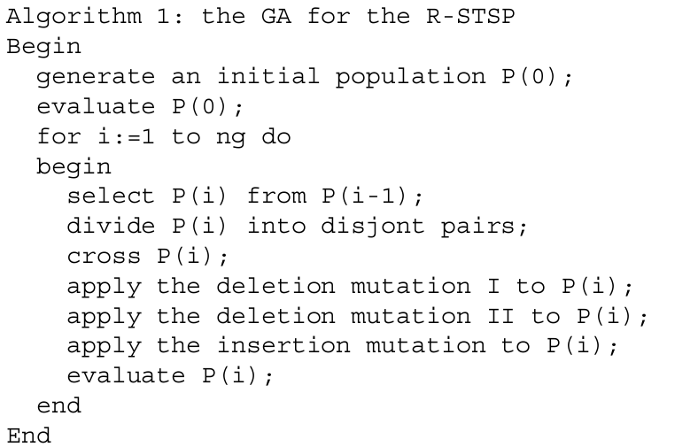
Coding
Chromosome is represented by a path. For example, the tour 1 - 2 - 3 - 5 - 6- 1 is represented by the sequence (1, 2, 3, 5, 6, 1).
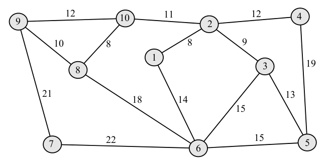
Generating initial population
- Start at the depot
- Choose a city to which we can travel with equal probability
- Add distance between depot and the chosen city to current tour length
- If length is not greater than cmax/2 we continue starting at the chosen city
- If it is, we reject last city and return to the depot the same way
Fitness computing
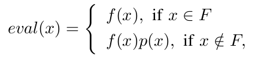
- x - individual
- eval(x) - individual's fitness value
- x ∈ F - individial is acceptable
- x ∉ F - individial exceeds constraint
- f(x) - profit collected
- p(x) - penalty
Penalty function
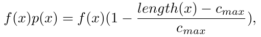
- length(x) - individual's length
- cmax - maximum acceptable length
Genetic operators
Selection
Tournament selection with tsize group size
- Select tsize individuals
- Compute their fitness values
- Select individual with greatest fitness value
- If individuals have equal fitness choose the one with shortest path length
- Copy winner to next population
- Return whole group to old population
Crossover 1/2
- Select random couple
- Check if crossover can take place. If not return to 1.
- Randomly choose one common gene from both parents common genes
- Treat this gene as crossing point like in good old binary crossover operator
- Swap fragments of tours from the crossing point to the end of the chromosome in two parent individuals
Crossover 2/2
Individuals that do not have a common gene (city) other than the depot cannot be crossed.
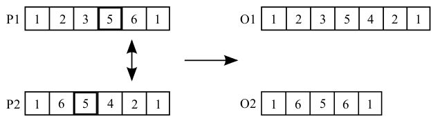
Mutation 1/3
Deletion mutation I
- Tries to remove repeated cities from path
- Visiting a city multiple times does not influence fitness value but increases path length
Mutation 2/3
Deletion mutation II
- Tries to remove random gene except for first and last which are established
Mutation 3/3
Insertion mutation
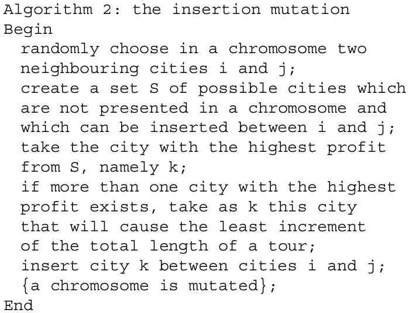
Experimental results
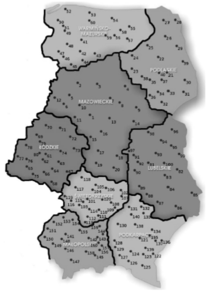
Cities
- Twenty cities from each of eight provinces of eastern and central Poland
- The network used in experiments was created from a real map
- The more inhabitants, the higher profit associated with a given city
- The capital of Poland, Warsaw, was chosen as depot
Profit
- Profits associated with cities were determined according to a number of inhabitants in a given city
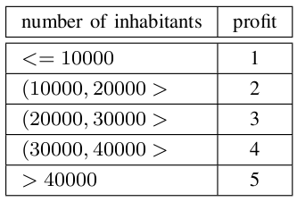
Parameters
- tsize = 3
- psize = 300
- ng = 100
- cmax = {500, 600, ..., 1500}
Results 1/3
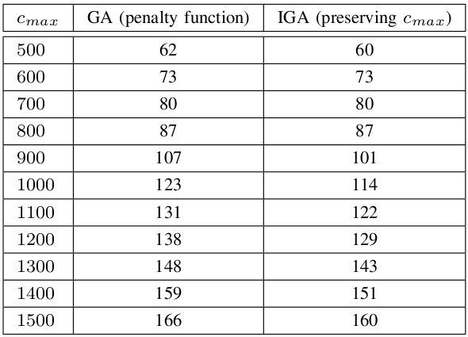
Results 2/3
cmax = 1500
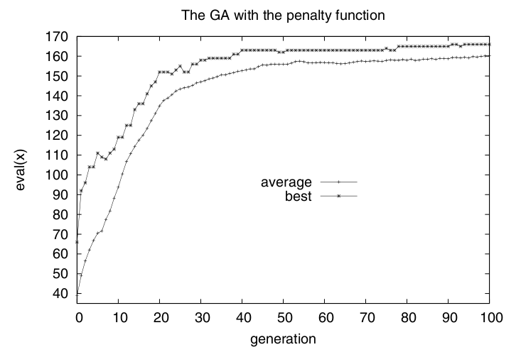
Results 3/3
cmax = 1000
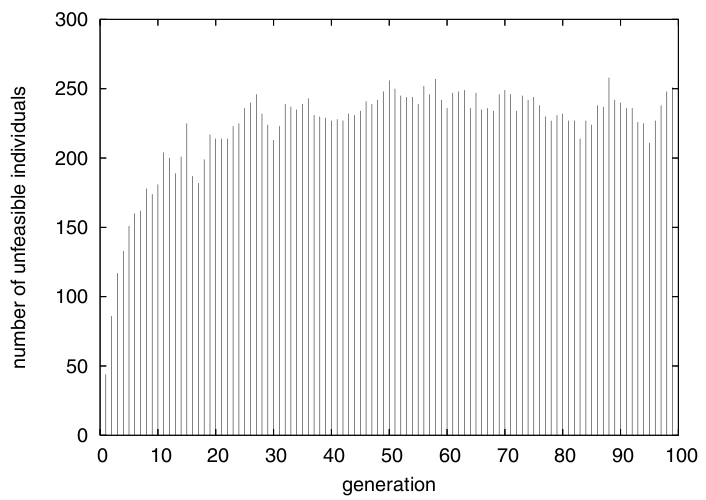
Conclusions
- Allowing individuals that exceed constraints widens search space
- Combining unfeasible individuals gives better results
- Genetic algorithm with penalty function solves this particular problem better
Questions?